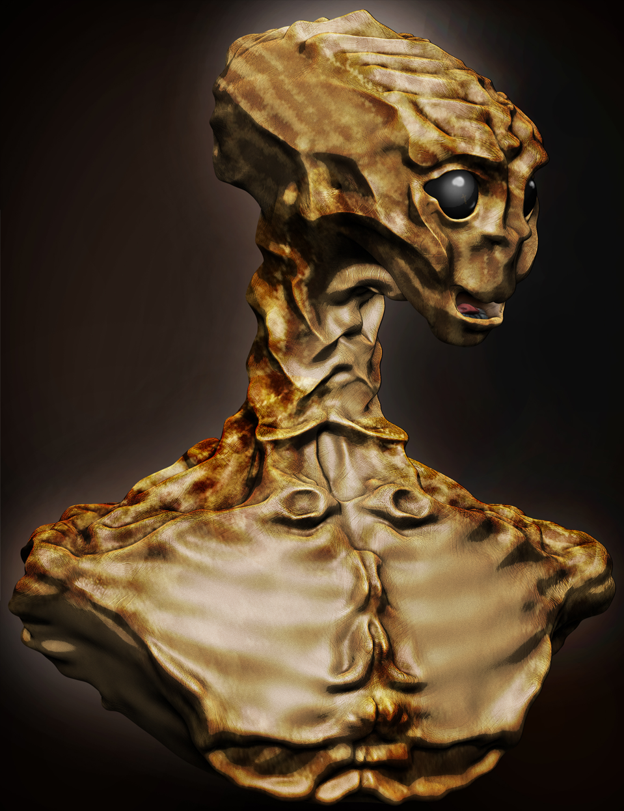
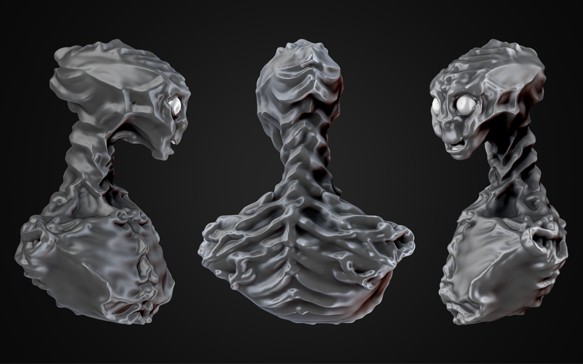

Work In Progress



When I was a kid I loved watching E.T. and I always wanted to know more about the planet and universe he came from. The Idea with this concept was to create a distant cousin that could be stronger and taller but still have that soft calming demeanor and emotionality in his face. This was just some quick messing around in ZBrush that I would like to polish further when I get time. 